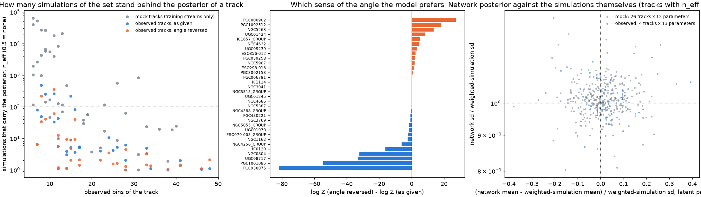
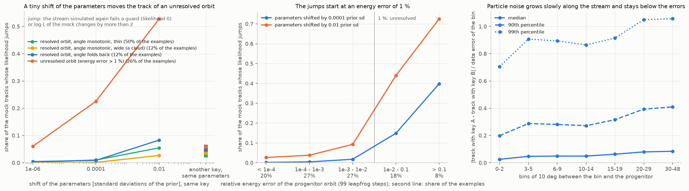
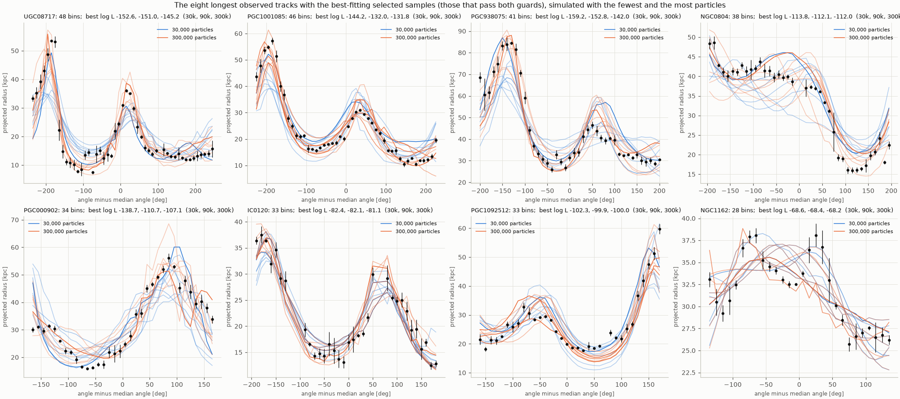

train_v2 · 10,000,000 streams · 30,000 particles · 99 leapfrog steps · study of 2026-11-24
What limits the accuracy of the stream posteriors
The network is already right where it can be checked. What holds it back on long tracks is the simulation set: too few simulations near the observed tracks, a quarter of them from orbits the integrator does not resolve, and exact symmetries that are not used.
Short tracks are solvedOn 30 tracks where the simulation set alone gives the posterior, the network's widths agree within 2–4 % and its means within 0.1 sd, for all 13 physical parameters.
Long tracks lack simulationsFor every observed track of 26 bins or more, fewer than 10 of 10 million simulations fit within the errors. The network overfits its own training streams there by 0.5–0.8 nats.
26 % of examples are unresolved orbitsTheir track jumps when the parameters move by 1e-4 of the prior width, so the exact likelihood is rough. Particle noise, by contrast, is small everywhere.
The transformer is the network's limitTwice the width and depth gains 0.35 nats. A larger coupling flow gains nothing. Diffusion gains 0.25. None changes which parameters are recovered.
How far the network is from the exact posterior
mock tracks
importance-sampling efficiency
simulations carrying the posterior
held-out − training loss
6–12 bins
12 %
4,000
0.01 nats
13–25 bins
5 %
57
0.17
26–49 bins
1.3 %
19
0.5–0.65
The efficiency is the same for the transformer at 94 and 381 epochs and for the MLP summary. The 32 observed tracks are harder than mock ones: the median track has 5 simulations of the set behind its posterior, and the long ones 1 to 5.
NGC1162 against nested sampling (28 bins, 8.4 million likelihood calls, 9.6 hours on four GPUs): the network's medians lie within 0.56 sd for all 15 parameters and its widths within 20 %, except vy0 (1.6 times wider), log M (1.3) and tint (1.2). Log-evidence −80.69 ± 0.10 from nested sampling, −80.3 from the network's importance weights. The marginals are usable; the joint is not exact (efficiency 0.02 %).

Left: simulations of the set that carry the posterior of a track. Middle: which sense of the angle the model prefers for each observed track. Right: network against the weighted simulations on the tracks where the set is dense.
Training experiments
A quarter of the set, 38,900 steps each, compared on the same 20,000 held-out mock tracks. Bars show the held-out loss minus the baseline's (spline flow 8×512, transformer 64×2, 12.19 nats); left of zero is better.
The correlation of the posterior mean with the truth moves by at most 0.04 between these runs (log M 0.43–0.46, x0 0.92–0.93). The gains are in the joint shape of the posterior.
Diffusion's density is an ODE solve: 22 minutes for 20,000 densities, against seconds for a coupling flow. Importance weights need those densities.
Dropping the unresolved streams does not help on the resolved ones. It removes data, and the long tracks overfit sooner.
The training set

6,000 held-out streams simulated again with another particle key and with slightly shifted parameters. Unresolved orbits (energy error above 1 %) are rough in the parameters; particle noise grows slowly along the stream and stays below the errors.
what
measured
Unresolved orbits
26 % of the examples (18 % of short tracks, 36 % of long). At a shift of 1e-4 prior sd, 15 % then fail a guard and 9 % move by more than 2 in log-likelihood; resolved streams do not move.
Particle noise
0.03 of the data error per bin near the progenitor, 0.08 at 30–48 bins. The far ends need no trimming.
Cost of the noise guard
It removes 5 times (short tracks) to 16 times (long) the simulations that could be compared with an observed track.
Bin phase
The progenitor is always on a bin edge in the mock tracks. A track in shifted bins cannot be had from the stored one (15 times the particle noise at the 90th percentile).
More particles: a test on good prior samples
7,871 parameter sets taken from train_v2 itself were simulated again with 30,000, 90,000 and, for 1,801 of them, 300,000 particles: 5,000 long streams with a resolved orbit, and the 2,883 simulations that fit the 16 long observed tracks best.
particles
long streams that keep 26 usable bins (data error 1 kpc)
samples that count for a long observed track
for the two longest tracks
best log-likelihood (median; largest)
network loss on the same windows
30,000
30 %
1
1
0
8.08 nats
90,000
52 %
× 1.6
× 2.6–3.1
+2.0; +27
+0.003 ± 0.007
300,000
68 %
× 2.0
× 5.2–6.1
+3.6; +68
+0.010 ± 0.016

The eight longest observed tracks with the best samples the guards allow at 30,000 particles (blue) and at 300,000 (orange).
More particles lengthen what can be used of a long stream and let better-fitting samples count. The best fits come up to those at 30,000 particles with the noise guard off, and not beyond: what the guard hid becomes usable.
What the network infers from a given window does not change. Particle noise at 30,000 is not what limits the inference.
Three times the particles costs three times as much and gives 1.6 times the usable samples for a typical long track, about 3 times for the longest. For the long tracks most of the evidence sits in simulations the guard excludes at 30,000, which more simulations at 30,000 would not reach.
Good samples for long tracks are 9 % of the usable prior draws: lower halo mass (median log M 12.26 against 12.61), heavier progenitor, closer in (x0 42 kpc against 76), longer tint.
A bug surfaced: the simulator stored bin counts as 16-bit integers, which wrap above 32,767 particles. Fixed; train_v2 is not affected.
Symmetries not yet used
scaling
track
surviving progenitor
dissolved progenitor
masses ×U, velocities ×√U, tint ÷√U
unchanged
exact
broken (3 % median)
lengths ×L, velocities ÷√L, tint ×L1.5
×L
exact
exact
Tested on the simulator with 3,000 streams: 99 % of resolved streams reproduce to 1e-7. The mass scaling fails for dissolved progenitors only because their mass is ramped to a fixed 1 M☉; a relative ramp would restore it.
Every simulation can therefore be reused at other scales, drawn from the prior along its orbit, at no simulation cost. For a surviving progenitor the track holds no information along (log M, log m, log v, log t) = (1, 1, ½, −½).
The model has a handedness: the progenitor moves anticlockwise. With the angle of the observed track reversed, the simulations fit better by more than 2 in log-evidence for 9 of 32 tracks, and worse for 8. These rest on effective samples of 1–5.
Plan
Scale augmentation in the mock observations. Draw (L, U) for every example and multiply the track by L. Exact, free, and it multiplies the set where it is thinnest. Make the mass ramp of dissolved progenitors relative so they get both directions.
A second, focused set. Simulate from a proposal over the region that makes long, resolved streams (9 % of the usable prior draws: log M below 13.2, massive progenitor, small x0, long tint), with the prior ratio as loss weight.
Resolve the orbits. Steps set by the orbit instead of 99 for all. Until then de_max: 0.01 restricts a run to resolved orbits for importance and nested sampling.
Mirror flip. StreaMAX-fit does not orient the tracks (checked at 2e6a708), so a stream that turns clockwise on the sky is outside the model. At inference, run the network on each observed track and on its mirror image (angle reversed), and change the signs of vy0 and diry in the mirror result. In training, flip half of the mock tracks and train a classifier of the sense, which weights the two results; the flow stays on vy0 > 0.
Network. Transformer 128×4 or larger with early stopping; diffusion or flow matching if the cost of their densities is acceptable. The larger affine run (flow 12×1024, transformer 128×4) tests this on the whole set.
Particles. 90,000 for the focused set only, where they pay for themselves on the longest tracks. The whole prior does not need them.
Bin phase. Needs particles at training time. An ordered truncated SVD stores a stream in 19 kB instead of 360 kB with a track error of 0.7 times the particle noise, but rebuilding tracks runs at 9,400 streams per second: enough to refresh tracks between epochs, not at every step.
Open points
The whole set at the same number of steps as the quarter-set baseline was not run.
A larger transformer combined with diffusion was not run.
The scale augmentation is tested on the simulator but not implemented in mock.py.
nested.py does not know de_max.
Each experiment ran once; differences below about 0.05 nats are not established.
No network was trained on the higher-particle samples: 7,871 are far too few.
Details, numbers and all figures: outputs/extragalactic/C26_test/accuracy_study/README.md.